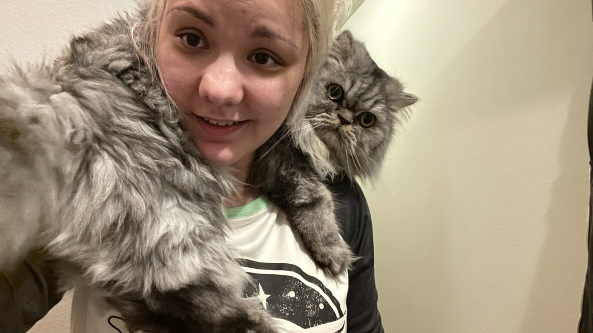

A little bit about me
My Hobbies and Home Life
My Hobbies and Home Life
I am currently learning Web Design using Treehouse Techdegree. Prior to my aspirations of becoming a web developer, I worked as a dental assistant at a private practice specializing in oral surgery.
In my home life, I spend time playing video games, reading books, and hanging out with my cats. I have two cats: Shirou and Lupin.
Shirou is about 3 years old. He was the smallest kitten I had ever gotten. Shirou is very picky about humans.
Lupin just recently turned 2 years old. He is the sweetest cat you will ever meet. Lupin acts more like a dog than a cat.